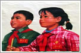
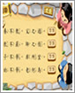

50年代是新中国成立初期，也是儿歌童谣创作的黄金时期。这一时期的儿歌童谣，大多歌颂毛主席，歌颂共产党，歌颂解放军，歌颂土地改革，歌颂中苏联友谊，也有反映着那个时代的儿童日常生活的。内容丰富，精彩纷呈，其中《让我们荡起双桨》《听妈妈讲那过去的事情》等打动了一代又一代儿童的心……


60年代的儿童歌谣延续着50年代的风格，比较注重儿童的思想道德建设，同时对新时期儿童的志向也有所记载。一些新的作品成为经典，其中的代表作当属后来被确定为中国少年先锋队队歌——《我们是共产主义接班人》，至今还在校园里传唱。儿童歌曲中《学习雷锋好榜样》、《一分钱》等，其中不少曲目成为幼儿歌曲中的经典。


上个世纪70年代，儿童歌谣分为两种类，一类是批林批孔，另一类是歌颂“上山下乡”知青扎根农村。然而，真正在儿童中传唱主要是革命歌曲《我爱北京天安门》《红星照我去战斗》《闪闪的红星》等。同时传颂广泛的还有《七色光之歌》《种太阳》《采蘑菇的小姑娘》等。


儿歌推荐-80、90年代的童谣
80年代儿歌出现了一个繁荣期。这一时期的儿歌含有很大的教育性，童稚、童真、童趣表现得非常到位。随着电视进入普通家庭，影视作品如外来动画片主题曲、台湾校园歌曲等成为孩子追捧的儿歌如：黑猫警长，阿童木之歌等。这一时期儿歌的特点是旋律更多变化，感情更富有色彩。


2000年以后，随着网络的普及和音频技术的发展，儿歌童谣的创作也加入大量的流行元素。承接上世纪90年代，儿童歌曲仍以动画片主题曲为主打。白龙马，喜羊羊等一些动画片的主题曲迅速在小朋友口中传唱。这一时期，儿童歌谣“新”字更突出，风格更多元，时代性也更强。


每月精彩儿歌专题推荐
重磅推出

《三字经》是中国古代历史文化的宝贵遗产，是学习中华传统文化不可多得的儿童启蒙读物。它短小精悍、琅琅上口，千百年来，家喻户晓。
精品儿歌
儿歌热播排行榜
故事热播排行榜